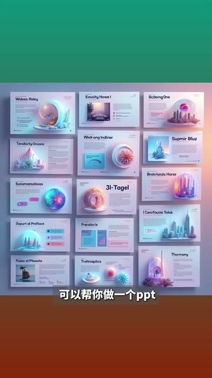
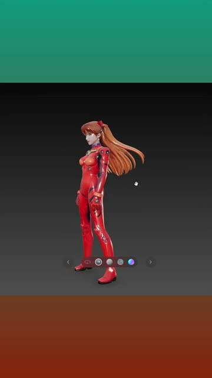
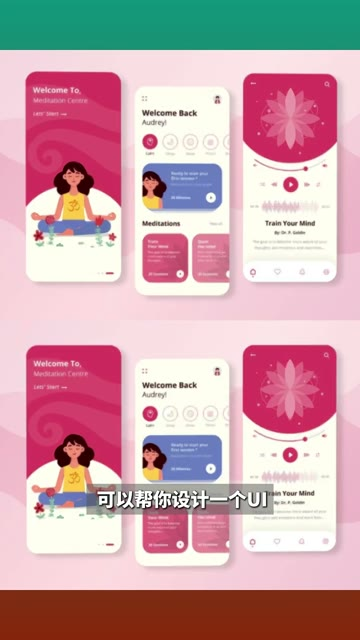
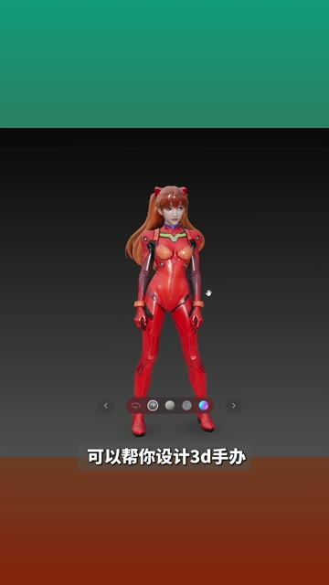
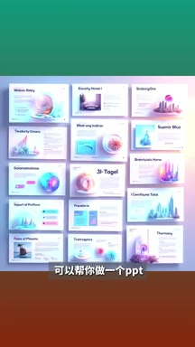
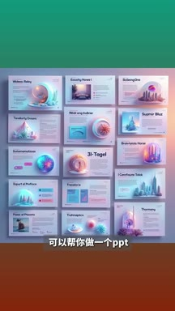
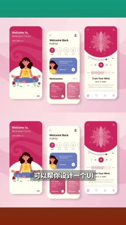
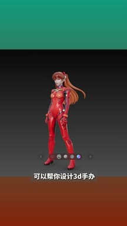
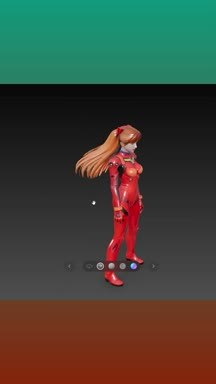
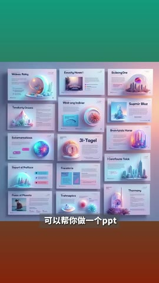

01钩子 / 问题
海报与 Logo
开场用海报和 Logo 两类最直观的品牌设计结果建立能力边界。
设计类 AI 的价值可以按具体交付物理解：海报、Logo、PPT、UI、3D 手办和网页。
这是一条高度压缩的垂直工具地图。它把泛泛的“AI 能做设计”拆成六种交付物，但速度过快，评论区不得不由观众补充工具对应关系。
设计类 AI 的价值可以按具体交付物理解：海报、Logo、PPT、UI、3D 手办和网页。
不是复述内容，而是标出每一段承担的叙事任务、观众问题和画面证据。
开场用海报和 Logo 两类最直观的品牌设计结果建立能力边界。
中段转向办公演示和产品界面，让设计 AI 从视觉创意延伸到工作交付。
最后用 3D 手办和网页扩大能力想象。视频完成了用途盘点，却没有交代工具、价格、操作和风险。
下列章节覆盖视频的主要论点、步骤与结果；每段都保留时间码和关键画面。
开场用海报和 Logo 两类最直观的品牌设计结果建立能力边界。

中段转向办公演示和产品界面，让设计 AI 从视觉创意延伸到工作交付。

最后用 3D 手办和网页扩大能力想象。视频完成了用途盘点，却没有交代工具、价格、操作和风险。


短视频每 1 秒、常规视频每 2 秒、超长视频每 3 秒取一帧。





小红书官方 zh-CN 字幕 · 5 段 · 71 字。字幕只记录声音；工具名、界面文字和结果含义必须结合上方视觉知识地图复核。
这个可以帮你设计一张海报
这个可以帮你设计logo

这个可以帮你做一个ppt
这个可以帮你设计一个ui，这个可以帮你设计三d手办
这个可以帮你设计网页
工具名称和生成条件未在口播中完整出现；评论区的工具映射属于用户补充，不能自动视为作者已证明的步骤。
打开小红书原帖 ↗